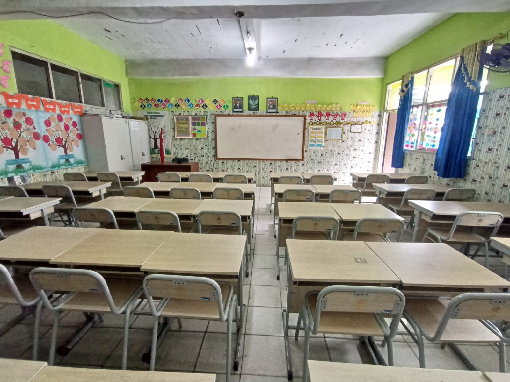
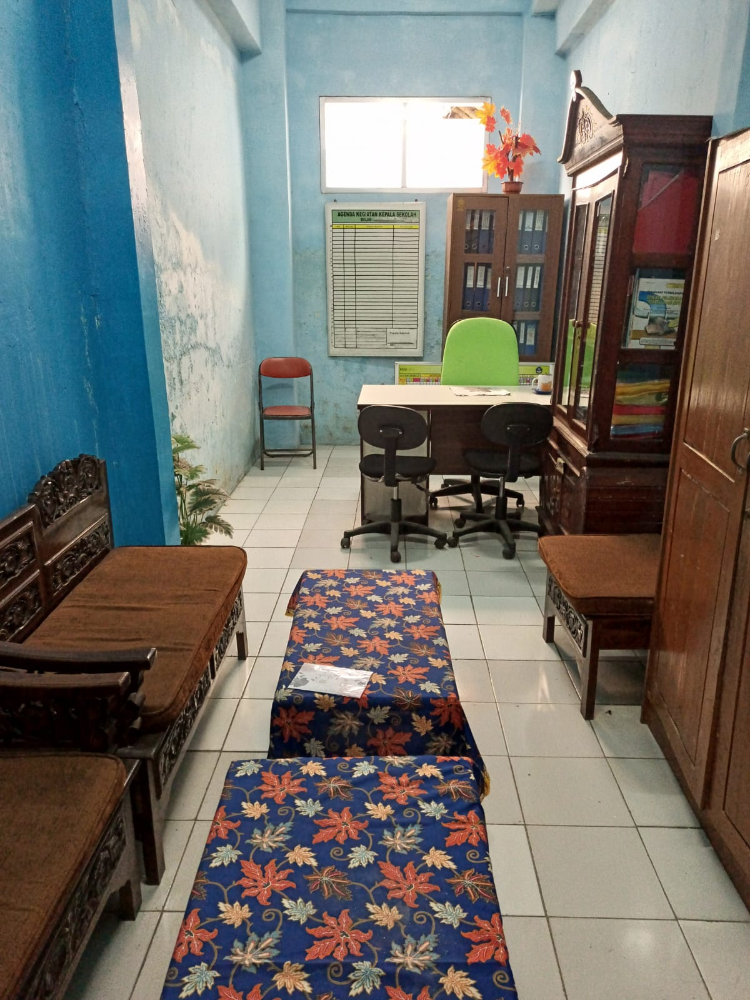
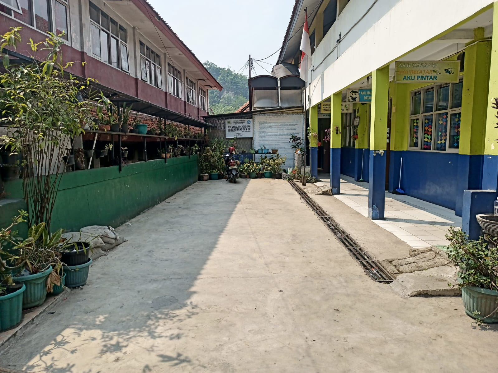

FASILITAS SEKOLAH
SDN 02 Bojong Rangkas menyediakan berbagai fasilitas yang mendukung proses pembelajaran siswa, mulai dari ruang kelas yang nyaman, perpustakaan yang lengkap, hingga lapangan olahraga yang luas. Semua fasilitas ini bertujuan untuk menciptakan lingkungan belajar yang aman, sehat, dan menyenangkan.

Ruang Kelas
Ruang kelas yang bersih, nyaman, dan dilengkapi dengan papan tulis dan meja belajar.

Ruang Kepala Sekolah
Berbagai koleksi buku bacaan dan referensi untuk menunjang literasi siswa.

Lapangan
Lapangan luas untuk kegiatan olahraga, upacara, dan permainan siswa.